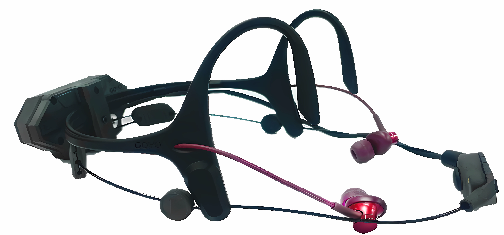

성대·목 주변 피부 진동을 공기 소음과 분리된 신호원으로 확보합니다.
Platform Thesis
하나의 센싱 기술로 두 개의 시장을 엽니다.
인투스의 핵심은 단일 넥마이크 제품이 아니라, 피부 표면의 미세 진동을 고감도로 측정하고 AI 신호처리로 의미 있는 음성·명령 신호로 복원하는 플랫폼 기술입니다.
이 기술은 작업자 간 통신(H2H)과 사람과 기계의 명령 인터페이스(H2M) 두 영역에서 폼팩터와 파트너를 바꿔 적용됩니다.
보유 특허 — 국내 등록·등록결정 2건 · 국내 출원 1건 · 미국 등록 1건(US 12,626,711). 출원인과 권리자는 모두 인투스 법인입니다.
저주파 중심의 진동 신호를 음성·명령 데이터로 복원합니다.
무전기, 헬멧, 마스크, 스마트글래스 모듈로 확장합니다.
Two Business Tracks
H2H에서 시작해 H2M으로 확장하는 로드맵
H2H · GOYO
고소음 현장의 작업자 간 통신을 먼저 해결합니다.
GOYO는 성대 진동 기반 웨어러블 마이크로, 공사장·제강·조선·군·소방 현장에서 기존 무전기와 헤드셋이 놓치는 음성 명료도 문제를 해결하기 위한 1차 사업 영역입니다.

문제
장비 소음, 충격음, 다중 발화가 작업 지시를 왜곡하고 비상 대응 지연으로 이어집니다.
솔루션
공기 중 소리에만 의존하지 않고 성대 피부 진동을 함께 활용해 발화자의 음성만 추출합니다.
파트너십
산업안전 장비, 무전기, 스마트 헬멧, 국방·재난 장비 제조사와 도메인별 사양으로 협업합니다.
Vibration Capture
성대 피부 진동을 센싱해 공기 전달 소음에 덜 민감한 발화자 신호를 확보합니다.
Signal Fusion
진동 센서와 마이크 신호를 결합하고 센서 잡음에 맞춘 필터링으로 입력 품질을 높입니다.
AI Voice Restoration
딥러닝 네트워크가 저주파 중심의 진동 신호에서 자연스러운 음성 성분을 복원합니다.
H2M · Physical AI HMI
Physical AI의 병목은 입력 신뢰도입니다.
로봇, 차량, 산업 자동화가 공장·건설·국방·물류 현장으로 들어갈수록 명령 입력은 마이크의 문제가 됩니다. 엔진음, 충격음, 바람, 헬멧·마스크, 다중 발화가 음성 명령을 흔들면 Physical AI는 사람의 의도를 안정적으로 받을 수 없습니다. 인투스는 성대 피부 진동을 AI가 해석 가능한 명령 신호로 복원하는 human-intent input layer를 설계합니다.
시장의 공백
AI가 눈·손·이동체를 얻어도, 현장 소음 속 사람 명령 입력은 여전히 공기 마이크에 묶여 있습니다.
인투스의 해법
몸에서 발생한 성대 진동을 우선 신호로 확보하고, 마이크·센서 융합과 AI 복원으로 명령 입력을 안정화합니다.
VC·PoC 관점
자동차 음성 HMI, 필드 로봇, 스마트글래스, 원격 운용 장비에 센서 모듈·SDK·레퍼런스 디바이스 형태로 검증할 수 있습니다.
Physical AI에서 음성 HMI가 왜 투자 포인트인가?
로봇과 자동화 장비가 사람과 같은 공간에서 일하려면 손을 쓰지 않는 명령 입력이 필요합니다. 그러나 현장은 조용한 사무실이 아니기 때문에, 소음에 강한 입력 레이어가 모델·제어기만큼 중요한 병목이 됩니다.
피부 진동 센싱은 기존 마이크와 경쟁하는가?
대체라기보다 보완 입력입니다. 마이크가 공기 중 소리를 받는 동안 성대 진동 센서는 발화자의 몸에서 나온 신호를 잡아, 소음·마스크·헬멧 조건에서 명령 신뢰도를 높이는 추가 채널로 동작합니다.
H2H Demo
현장 소음 조건에서 음성 전달 차이를 비교한 시연 음원입니다.
같은 문장을 무소음과 선박 엔진 소음 조건에서 녹음한 GOYO 시연 음원입니다.
직접 통신 · 무소음
무소음 조건
직접 통신 · 선박 엔진
선박 엔진 소음
무전 송신음 · 무소음
무소음 조건
무전 송신음 · 선박 엔진
선박 엔진 소음
Global Signals
글로벌 고객 대화는 검증된 관심의 신호로만 보여줍니다.
CES 등 해외 현장 사진은 초상권·상표권·파트너 오해 리스크가 있으므로, 공개 동의와 맥락 설명이 확인된 사진만 선별 노출합니다.
Company
인체 신호를 유용한 정보로 바꿔 안전한 산업현장과 건강한 삶에 이바지합니다.
Our Mission
인투스는 포스텍과 연계한 합작투자형 연구소 기업입니다. 인투스의 제품화·핵심기술 개발과 포스텍의 기초 연구를 잇는 산학 모델로 웨어러블 디바이스의 혁신을 추구합니다.
Corporate Identity
열린 문을 표현한 심볼마크는 라틴어로 「안에서부터」를 뜻하는 intus 를 시각화한 것입니다. 인체 내부 신호를 유용한 정보로 변환하는 기술 혁신과 열려 있는 기업의 이미지를 담았습니다.
Since 2021
2021년 설립. 포항 청암로 87(포스텍 캠퍼스)에 본사를 두고 있으며, 성대 진동 기반 음성 기술로 국내 등록·등록결정 2건, 국내 출원 1건, 미국 등록 1건의 특허를 보유합니다.
News
현장 검증 소식
- 현대건설 오픈이노베이션 협약 완료
- 한국수력원자력 새울3호기 공사현장 테스트 완료
- 포스코 포항제강 2차 현장테스트 검증
- 인투스 홈페이지 개설
GEO Content Hub
AI 검색이 인투스를 답변 소스로 인용하도록 설계합니다.
H2H Answer Gap
“85dB 이상 산업현장 음성 통신”, “성대진동 마이크” 같은 질문에 기술적 답변과 현장 사례를 제공합니다.
H2M Physical AI FAQ
“소음 환경에서 로봇 음성 제어가 실패하는 이유”, “진동 센서 HMI” 검색 의도를 직접 충족합니다.
Form Factor & Licensing Notes
무전기·헬멧·마스크 제조사가 묻는 통합 방식과 라이선싱 조건을 기술 노트와 케이스로 정리합니다.
운영 포맷
논문 해설 · 산업 동향 · 기술 FAQ · 케이스 스터디를 한영 이중 발행하고, 각 글에서 기술 페이지와 문의 페이지로 연결합니다.
Partnership
산업 현장·Physical AI 파트너와 함께 시장별 폼팩터를 만듭니다.
PoC, 공동 제품화, 현지 인증, 산업별 유통, 기술 라이선싱 논의를 환영합니다.